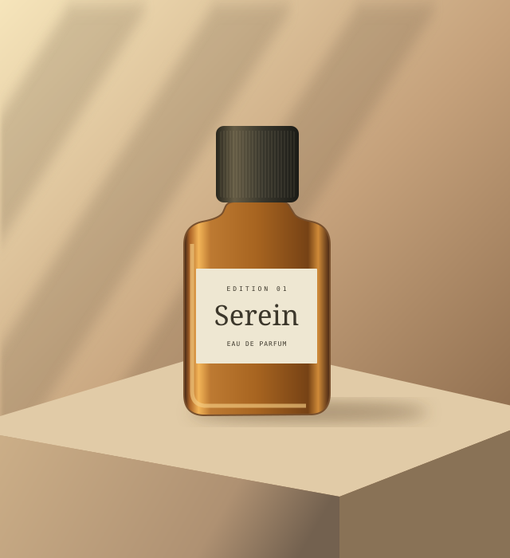
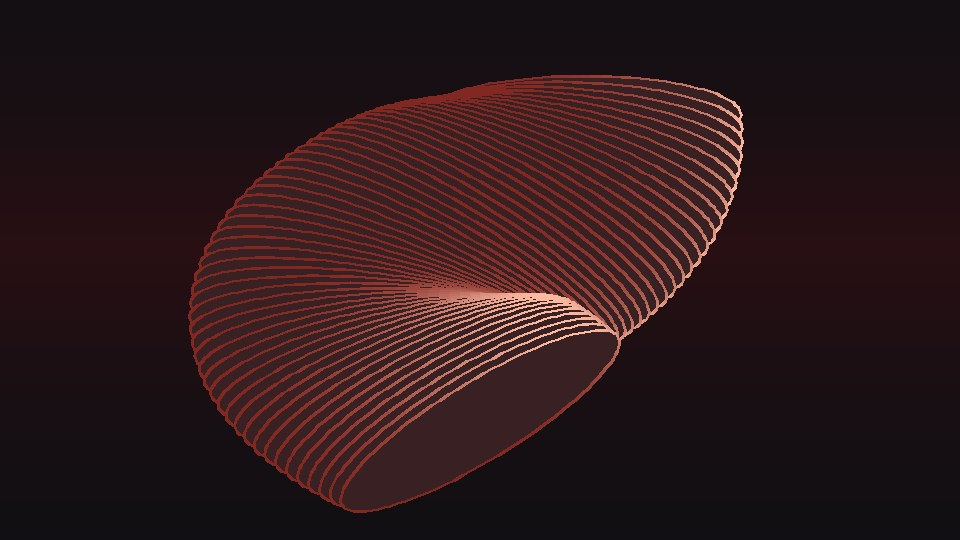
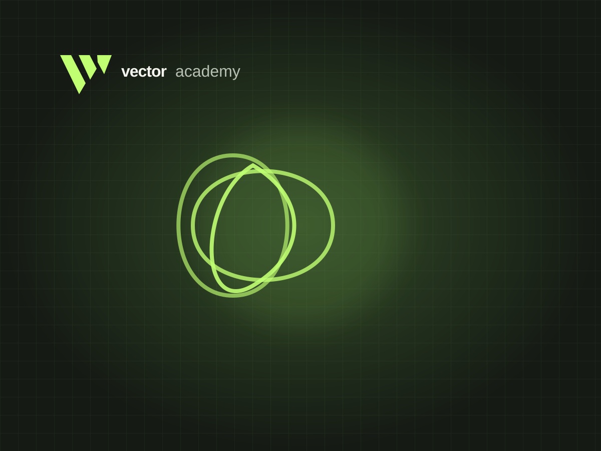

01 / BRAND & CAMPAIGN
01 / BRAND & CAMPAIGNOff Register ↗
A print-led identity studio with an expandable case study.
Six independent website concepts for creative studios, an AI academy, a local builder and a neighborhood gym.
01 / BRAND & CAMPAIGNA print-led identity studio with an expandable case study.

02 / ART DIRECTIONAn art-direction studio with illustrated fragrance and tableware collections.

03 / MOTION DESIGNA screening room built around an original six-second film.

04 / AI EDUCATIONAn applied AI learning studio with practical programs and field notes.
 05 / CONSTRUCTION
05 / CONSTRUCTIONA full-service remodeling concept with projects, services and a working journal.
 06 / FITNESS
06 / FITNESSA neighborhood gym with small-group classes and a guide to getting started.